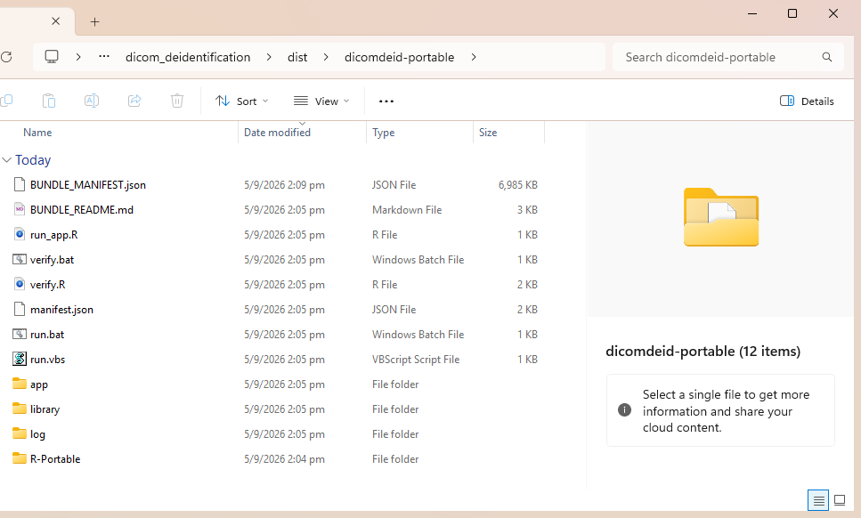
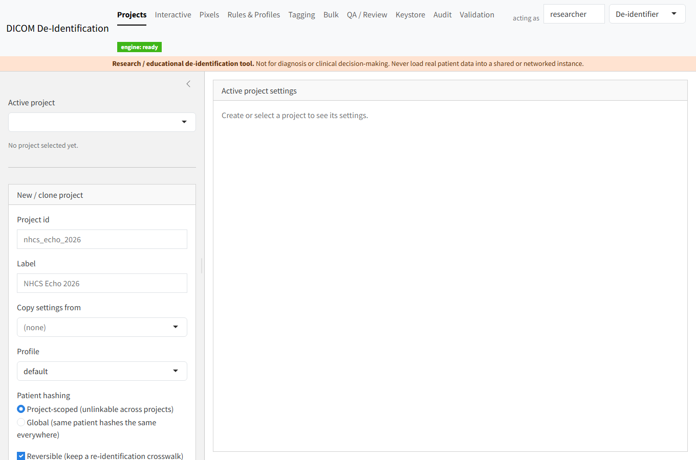
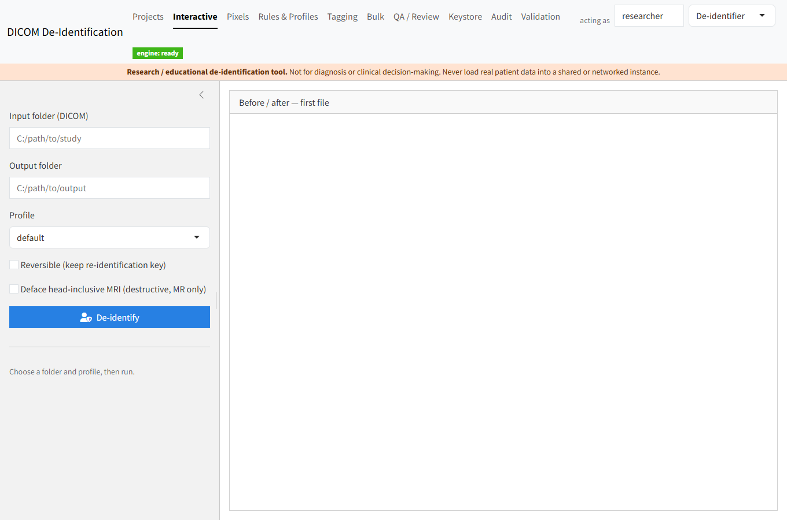
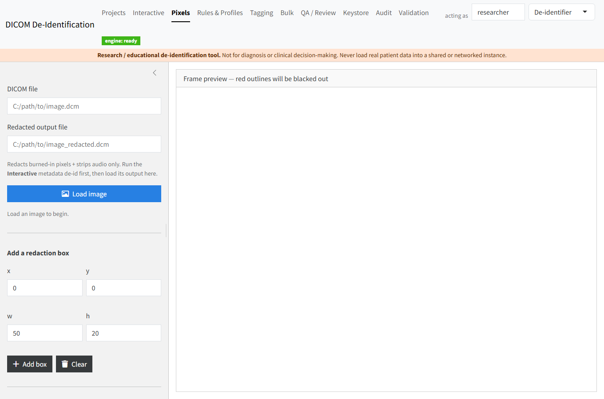
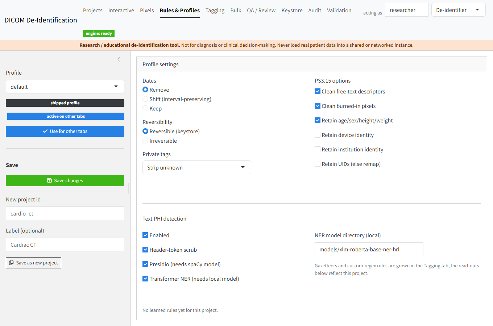
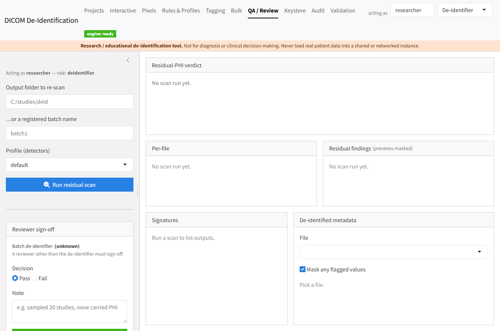
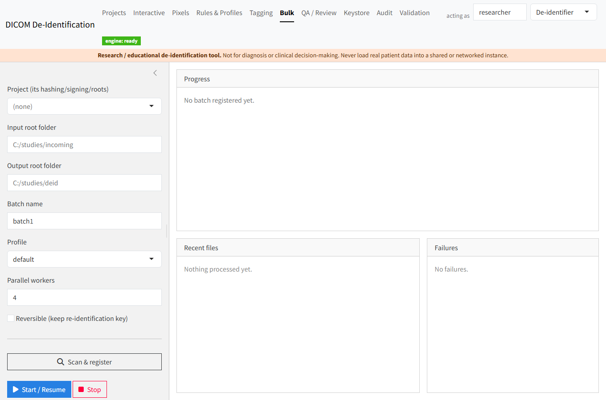
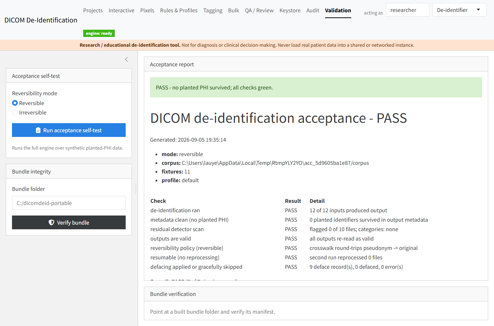

1Run it — the portable way (no install)
The recommended path for a locked-down, air-gapped laptop. The whole app — portable R, the Python engine, the NER model, and Tesseract OCR — ships inside one folder. Nothing is installed on the target and nothing needs PowerShell or admin rights.
- Copy the folder over
Copy
dicomdeid-portableto the machine. Keep the path short (e.g.C:\dicomdeid\) so Windows never trips on long library paths. - Verify the copy (optional)
Double-click
verify.bat. It re-checksums every file against the shipped manifest and printsRESULT: OK. - Launch
Double-click
run.bat(orrun.vbsfor no console window). A window reports “Starting the app — your browser will open shortly.” - Use it in your browser
Your default browser opens at
http://127.0.0.1:8973. Everything runs locally — no network is used. - Set a keystore passphrase
On the first reversible run the app asks for a passphrase; that creates the encrypted crosswalk. It never travels inside the bundle.

verify.bat checks
integrity; app/, library/ and R-Portable/ hold the
self-contained runtimes.
Prefer developer mode?
If R and the app's packages are already present, run it from the project root — after building the relocatable Python engine venv once on a connected machine.
# once, on a connected build machine: pwsh inst/python/build_venv.ps1 -Phi -Ner # then, from the project root: Rscript -e 'shiny::runApp(".")'
inst/python/.venv). See the air-gap install guide
for the full offline build & packaging steps.2A tour of the app
Ten tabs, gated by role (de-identifier vs reviewer). Here are the ones you'll use most.

De-identify one folder
Point at an input folder and an output folder, pick a profile, choose reversible or irreversible, and run — with a before/after metadata diff on the first file. Optional defacing for head-inclusive MRI.
Burned-in & manual redaction
Scrub text burned into the image (OCR-driven auto-detection) and draw manual redaction boxes; audio/waveform is stripped too. Run the metadata de-id first, then load its output here.


Configure the policy
Per-project profiles: date handling (remove / interval-preserving shift / keep), reversibility, private-tag policy, PS3.15 option flags, and the layered text-PHI detectors — header-token scrub, gazetteer, Presidio, and a transformer NER.
Independent sign-off
A reviewer — not the de-identifier — re-scans the outputs for residual PHI and records a pass/fail decision. Finding previews are masked, and every action is written to a hash-chained audit log.


Whole-tree, resumable
Queue an entire directory tree, run N parallel workers, and start / stop / resume. A SQLite manifest tracks every file's state, so a killed job restarts without reprocessing what's already done — batches up to ~2 TB.
3Prove it works — the acceptance self-test
The Validation tab runs the whole pipeline over a synthetic, planted-PHI corpus and checks that nothing planted survives. No real studies are ever needed.
One click builds the corpus, de-identifies it, and verifies:
- every input produced valid, re-readable output
- zero planted identifiers survived in metadata
- the residual detector flagged nothing in the pixels
- reversible mode round-trips pseudonym → original
- a rerun reprocesses nothing (resumable)
- defacing applied or gracefully skipped
testthat +
pytest).